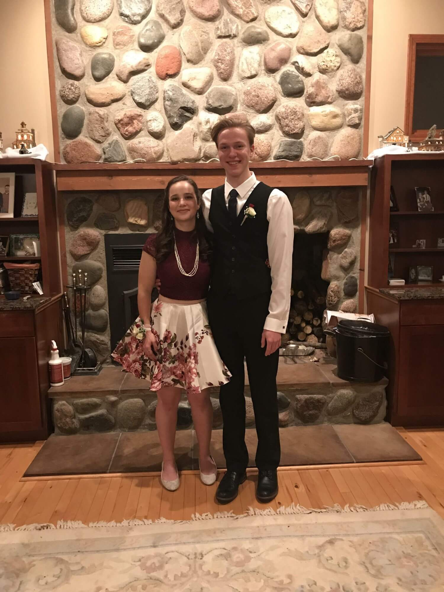
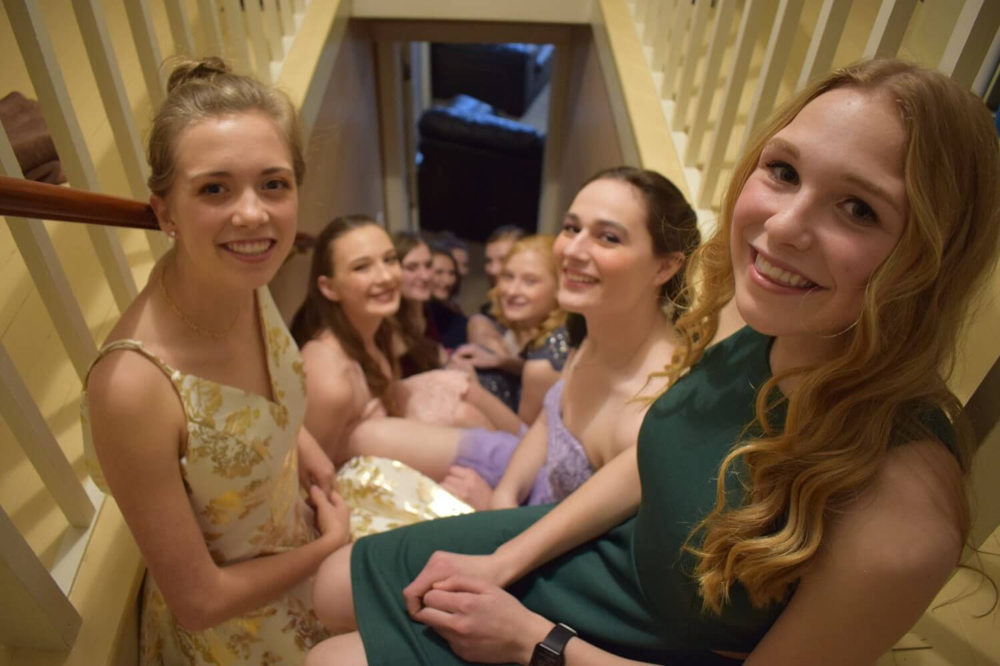
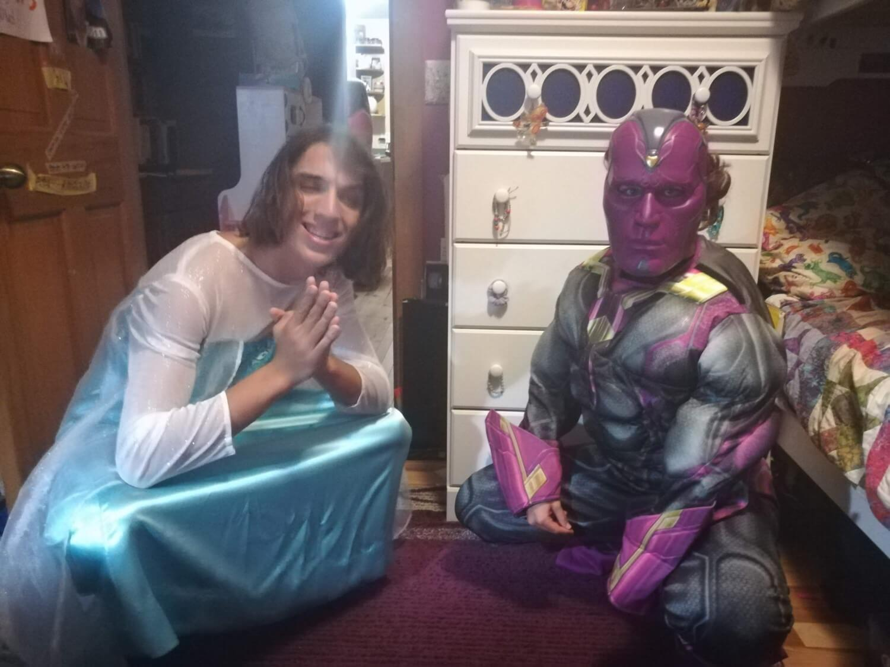
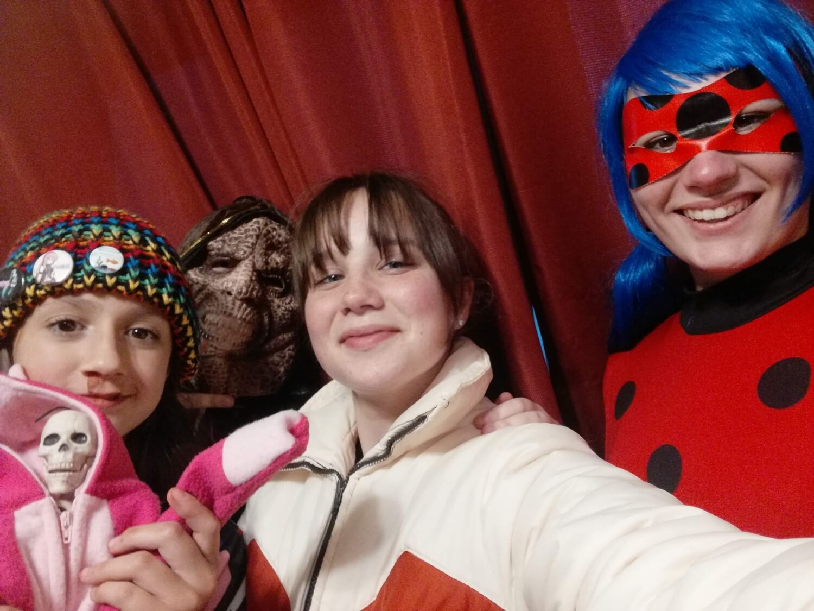
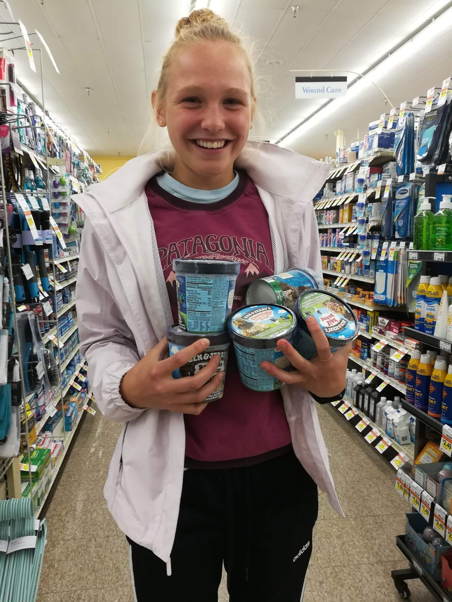
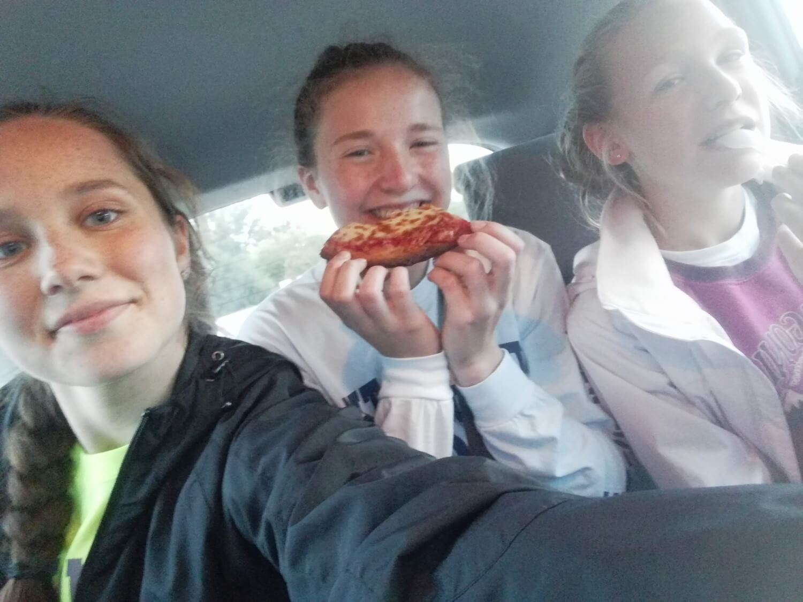
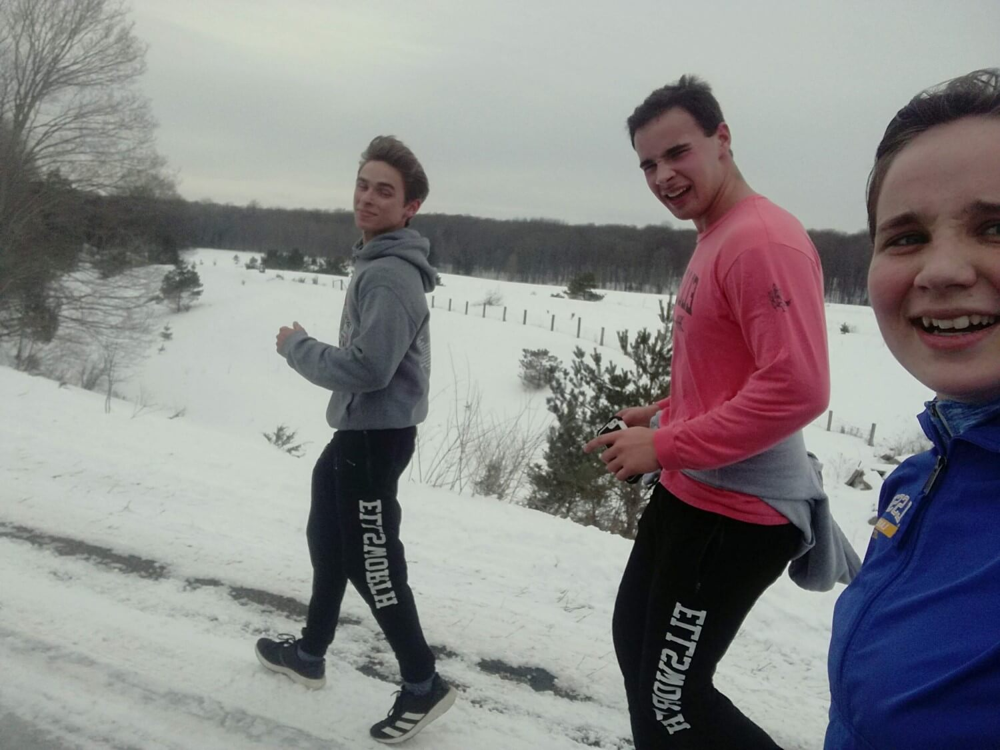
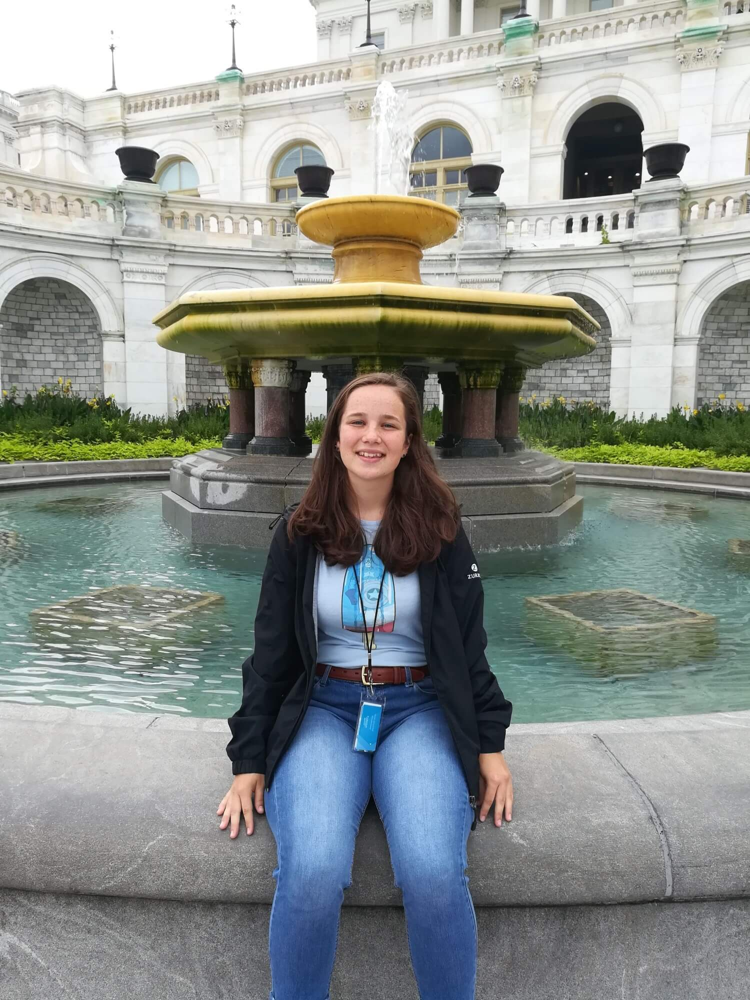
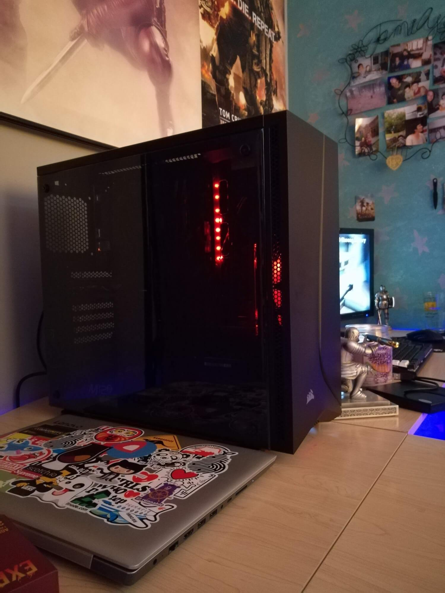

I've created this website to highlight my time in high school. While that phase of my life has come
to an end, I'm onto my next at the University of Michigan for Computer Science (maybe).
That's enough said; let's get into it!
~Homecomings~
Small Sadie attending her first high school dance ever, accompanied
by two of her good buddies Ivy (middle) + Sarah (right). While I apparently
couldn't be bothered to look at the camera, we all unintentionally matched
w/ floral!

Fast forward to junior year and I'm rocking a two piece w/ my
friend Josh as my date.

Enough pictures of me in dresses, look at my friends! Taken atop Brooke's (left) stairs,
this is my favorite photo I took for my senior hoco. Pictured top right in the magnificent
green is Maia and right beneath her in the glorious purple is Ivy.
~Halloweens~
While I'm not quite sure how Halloween managed to get an exclusive category in the web
montage of my high school life, I managed to have some pretty rad Halloween celebrations
in high school. Pictured on the left is Min, our 10th grade foreign exchange student from
South Korea dressed as Little Red Riding Hood. In the middle is Sarah rocking a homemade
Princess Zelda costume. And I'm on the right with my $10 Donatello TMNT costume.

Oh dear, this sure is a special one. In junior year, I had the privilege to go trick-or-treating
with Elsa! Well, it was actually Caleb but he was just as cool if you catch my drift. Pictured on
the right is me in an oversized costume. And yes, I did attend Cross Country practice with the full
suit on.

Yet another epic Halloween this past year. I got to spend it w/ Brynn (left) as Eleven from
Stranger Things, Sarah (middle) as, and Ivy (right) as the Miraculous Lady Bug.
In the same time-line as the above photo, I was dressed with another $10 steal from the local
Halloween Superstore. I went as Rey from Star Wars.
~Cross Country (mostly)~
This entire section is what I like to call: "It's just a Cross Country thing."
Pictured here is our Coach Ruben collecting our phones on our way down to States to ensue
some quality bonding time. You can see the devilish smile on his face that knows we will
be forced to converse with one another. My, I never heard of such a thing.

I'd like to call this one "It's just a Cross Country thing 2.0" After our last conference
race of the season, we made our way to grocery store to carbload on ice cream + pizza.

This was taken the same day as the above photo. We squished in our cars and devoured
the aforementioned pizza much to our delights. Judy is pictured in the middle with the
huge grin on her face, with Maia on the right.
Definitely the most flattering picture of me on here, this was taken mid-race on my
brutal home course.
Same race as pictured above, I placed 17th, woo! Note the 5 Ellsworth girls in the top 20. :)

While it's not exactly Cross Country, it's still running, so same thing, right? During an
off-season run through the snow, Robbie (left) is having a grand ol' time, while Bill (middle)
and I are struggling a bit, though I don't think you can tell that by the big smile on his face.
Note the matching Ellsworth sweatpants (I was wearing mine too.)
Let's change gears to the other running sport I do, Track & Field, and appreciate
this very wholesome photo of me and my friend, Brooke. It seems we just finished a relay,
given the silver baton in my hand.
Let's finish this section off with Lilly smirking at a passed out Sadie on the bus ride home
from a Track meet. Taken by the lovely Brooke!
~All the other things~

On a Washington D.C. school field trip, I'm sitting on a fountain with my considerably
shorter than normal hair. Ah, the good ol' days. Note my Capsicle shirt (Captain America
in an ice pop)
Stickers!!!! Here is my (kind of) newly redecorated hydration station. But seriously,
stay hydrated out there. :D

This here is the PC I built. She's the rig that I run daily and she's an absolute beaut. Oh,
yes I am a sticker enthusiast.
Here's another thing I made! Probably being the art piece that I am most proud of, I had to
customize a color wheel with primary and secondary colors. So, I chose a pie. Pies and wheels
are pretty much the same thing, being circles and all, right?
Let's change gears a bit; here's my old car! I took this photo because as I was walking towards
my vehicle, I had a heart attack that someone had stolen both my stickers + license plate (shh,
I promise I can think properly some of the time.) But anyways, there just happened to be two lil'
Fits right next to each other.
"Sadie! Go stand by that car! You match perfectly!"
Taken during my second year at Comic Con, Ivy (left), Sarah (right), and I are taking a rest
break during our exhausting adventures.
A snapshot of my first ever concert. Located at 21 Monroe Live in Grand Rapids, it was an
incredible line-up of 3 bands I've been known to rock out to: Asking Alexandra, Bad Wolves,
and Papa Roach.
A bangin' selfie with Maia on a day trip to Ocqueoc Falls. Note my clad attire on a summer day
in comparison to Maia's.
Taken in South Dakota on the Cheyenne Reservation. I got the honor of going on a mission trip
and experiencing it with both new and old friends alike.
Here's an apprehensive Sadie! Taken in front of a brewery in Traverse City, I was ready to skrrt
out of there. My friend Lilly had taken a similar picture, so it felt appropriate to do the same.
Food break! I've been known to find my way around the kitchen to cook + bake for those who are
willing to try my creations.
Now, from food to hair! After long consideration, I opted to full send into bangs, so to speak.
While they're a lot to keep up with, it was a nice change to have, though maybe not right in
the middle of the Cross Country season.
Here's my brother Paul and I looking ~snazzy~ for a wedding. Yes, the picture was taken by
someone considerably taller than both of us.
Let's change things up a bit! This was downstate at a Renaissance Faire that I got the pleasure
of going to. It's quite incredible to watch live jousting!
Now, let's head about 600 miles West to the great city of Minneapolis where my brother resides.
I took this selfie with my mom overlooking a very pretty bridge.
600 miles is child's play compared to this: Canada! Lilly took this cascading-style photo during
a fall vacation to our neighboring country.
Ope! More holidays! Alright, the story behind this is I once bought a Minecraft body pillow as a
Christmas gift for my friend Caleb. I wrapped it entirely with paper and even finished it off
with a bow fitting for its size.
Sticking with the Christmas theme, this shows how actually short I am. That's right folks,
I come in at a whopping 5'1"!
This past year, Sarah, Ivy, and I, had a present extravaganza at school. Here's us opening a bunch
of gifts, practically smothered in wrapped paper.
Speaking of small people, this is Emma, my Little Buddy (a student from the Elementary school
that I get the pleasure of hanging out with!) This is her making a snow angel after an exhausting
half an hour of sledding.
Taken on an XC ski outing in the UP, I thought this trail sign was too cute not to photograph.
If the amount of snow heavy pictures doesn't prove how astoundingly long Michigan's winters are,
I'm not sure what will. This is me and group of buds toppling to the ground due to an unstable
group hug.
Here's a little caffeine to warm up after all of those chilly pictures. A common theme during
high school for me was to grind school work on the weekend at coffee shops. This happened to be
taken on a trip to visit my family in Massachusetts.
Definitely one of the best pictures of me in the books, this was taken on the Petoskey Pier
by my brother Paul.
Here's me ringing in 2020 with my friends, Hannah and Lilly, respectively, though it's definitely
turned out to be a different year than expected.
While Michigan offers some pretty brutal winters, she also offers equally pretty sunsets. This
was taken in Boyne City on Lake Charlevoix.
This past February I went to a scholarship competition at Michigan State which was an experience
within itself. I was introduced to a niche coffee shop downtown and found this art fascinating
enough to stop for a picture.
During my first year of Robotics, we won our first district event! It was an absolute heck of a time.
Here's my second child- second only to my PC of course. She's decorated with all sorts of goodies,
per my relentless sticker addition.
Cat Tax. This cute lil' fluffer is Ivy's cat Athena.